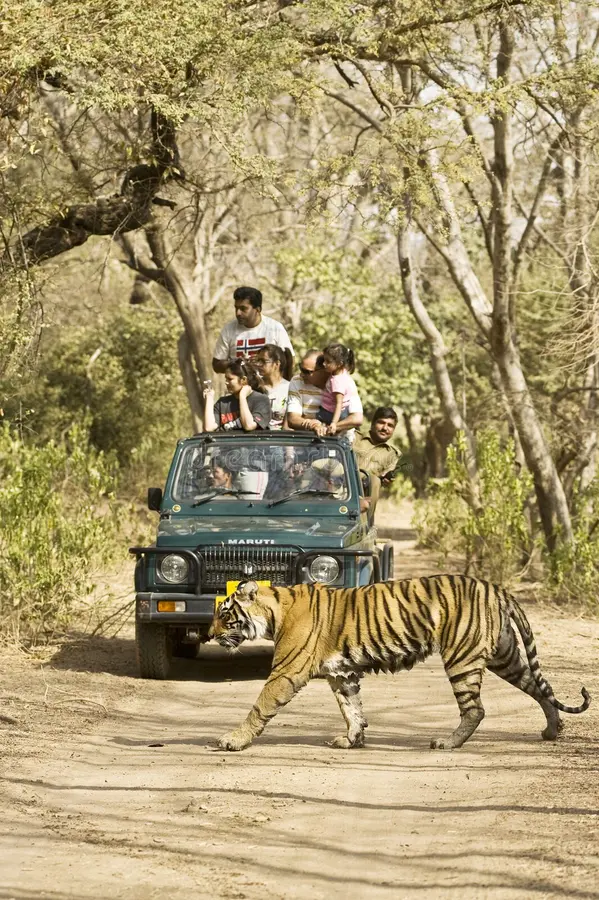

Explore Handpicked Jungle Tours & Wildlife Experiences.
Traverse India's majestic tiger reserves with direct Forest Department Gypsy & Canter permit facilitation. Real-time availability, certified native naturalists, and transparent government rates.
Select your park & date to calculate official Gypsy / Canter permit costs instantly:
Immerse yourself in India's wildest frontiers. From the misty sal canopies of Jim Corbett and the historic fort trails of Ranthambore to the predator heartlands of Tadoba and the riverine rhinos of Kaziranga, we provide verified government permits, customized 4x4 open Gypsies, and native field trackers for life-changing wildlife encounters.
Direct forest department allotment across core & buffer zones with zero hidden permit charges.
Private open-top safari vehicles optimized for unobstructed views, safety, and photography.
Accompanied by veteran forest guides trained in animal track interpretation and alarm calls.
Morning & evening slots strategically booked for peak predator activity and optimal photo light.

Select a national park to explore regulated core safari zones, permit pricing, animal sighting probabilities, and seasonal gate schedules.
 India's 1st National Park
India's 1st National Park
India's oldest national park nestled along the scenic foothills of the Himalayas. Explore ancient sal woodlands, sprawling Dhikala grasslands, and picturesque Ramganga riverbeds renowned for majestic Royal Bengal Tigers, wild elephant herds, and over 600 species of resident and migratory birds.
 Royal Fort & Lakes
Royal Fort & Lakes
The world's most iconic tiger sanctuary where Royal Bengal Tigers roam past 10th-century fortresses and tranquil lake waters. Experience thrilling open-jeep game drives across historic hunting grounds, scenic banyan groves, and prime core zones like Padam Talao and Rajbagh.
 Highest Tiger Density
Highest Tiger Density
Celebrated as the "Jewel of Vidarbha," Tadoba is Central India's undisputed tiger powerhouse. Dominated by dense teak forests, bamboo thickets, and pristine Telia Lake, it offers legendary predator tracking across Moharli and Kolara gates alongside thrilling nocturnal buffer night safaris.
 UNESCO World Heritage
UNESCO World Heritage
A UNESCO World Heritage sanctuary cradled along the floodplains of the mighty Brahmaputra River. Home to over two-thirds of the world's Great One-horned Rhinoceros population, wild water buffalos, Asian elephants, and elusive swamp deer navigating sprawling elephant-grass savannas.
 Asiatic Lions Only Home
Asiatic Lions Only Home
The sole remaining natural sanctuary of the majestic Asiatic Lion outside Africa. Spanning rugged deciduous teak forests, rocky ravines, and perennial riverbanks, Gir delivers an unforgettable wildlife safari tracking regal lion prides, leopards, and thriving herds of spotted chital.
Historic Tala Fortress
Boasting one of the highest tiger densities in the world, Bandhavgarh is steeped in rich wilderness and history. Track majestic big cats across dramatic cliffs, lush sal valleys, and bamboo meadows set against the backdrop of the iconic 2,000-year-old Bandhavgarh Fort and Tala zone.
Immersive multi-day itineraries complete with guaranteed core safari permits, luxury jungle resort stays, all gourmet meals, and transfers.
 3 Days / 2 Nights
Most Popular
4 Days / 3 Nights
High Sightings
4 Days / 3 Nights
UNESCO Special
3 Days / 2 Nights
Most Popular
4 Days / 3 Nights
High Sightings
4 Days / 3 Nights
UNESCO Special
Whether you desire an exclusive 4x4 open Gypsy for family photography or a cost-effective Canter safari, we facilitate government registered permits for every preference.
The gold standard of Indian wildlife safaris. Open top 4-wheel drive modified specifically for rugged jungle tracks and silent stalking.
A high-clearance open safari mini-bus operating in high-demand zones such as Dhikala (Corbett) and Ranthambore core lakes.
Experience the jungle after dark in licensed buffer corridors of Tadoba and Pench. Track nocturnal leopards, civets, owls, and hyenas.
Available in Kaziranga National Park. Allows you to navigate through dense swamp grasslands where vehicles cannot venture.
Forest departments enforce strict daily quotas. Here is our seamless 4-step facilitation process from inquiry to jungle gate entry.
Choose your destination national park, preferred safari date, and morning or evening shift based on peak sighting trends.
Select an exclusive 4x4 Gypsy or Canter seat, and specify your preferred Core zone (such as Dhikala, Bijrani, Moharli, Tala).
Provide names, ages, and Govt ID numbers (Aadhaar/Passport). We file the official permit on the Forest Department registry.
Receive your confirmed booking permit voucher, resort coordination pass, and dedicated driver-guide contact details.
Wildlife movements and tiger behaviors change dramatically across seasons. Choose the ideal safari months based on sighting probabilities, climate comfort, and open zone permits.
Rising temperatures cause dense undergrowth to dry out, making tiger tracking significantly easier. Big cats and elephant herds frequently gather near perennial riverbanks and waterholes to cool off.
Enjoy crisp, mist-kissed morning game drives with comfortable daytime temperatures. Forest canopies are lush post-monsoon, and thousands of migratory birds settle across lakes and river floodplains.
Core gates close for annual wildlife breeding. However, scenic buffer zones in Tadoba and Corbett remain open for peaceful safaris, offering emerald-green landscapes, roaring waterfalls, and night drives.
| National Park | Peak Tiger Sightings | Pleasant Weather Season | Monsoon & Closure |
|---|---|---|---|
|
Jim Corbett
Uttarakhand
|
March – June Waterhole gatherings & thin dry foliage | October – February Pleasant weather & migratory birding | July – September Core zones closed (Buffer open) |
|
Ranthambore
Rajasthan
|
April – June Tigers active around lakes & ruins | October – February Crisp mornings & comfortable safaris | July – September Core zones 1 to 5 closed |
|
Tadoba Andhari
Maharashtra
|
March – June Highest sighting probability at waterholes | October – February Lush green forest post-monsoon | July – September Core closed (Buffer open for safaris) |
|
Bandhavgarh
Madhya Pradesh
|
March – June Highest tiger density & dry cover | October – February Comfortable winter temperatures | July – September Core zones closed |
|
Kaziranga
Assam
|
February – April Rhino dawn walks & dry grasslands | November – January Mild climate & world-class birding | May – October Park closed due to flood season |
|
Gir National Park
Gujarat
|
March – May Active Asiatic lion pride trails | December – February Pleasant weather across all tracks | June 16 – October 15 Closed for monsoon mating season |
Real safari lovers who placed their wildlife dreams in our hands. Zero bots, pure memories.
Clear, transparent answers on government permits, booking timelines, core vs buffer zones, and safari guidelines.
Government permit booking quotas open 90 to 120 days in advance depending on the state forest department. High-demand core zones like Ranthambore Zones 1 to 5, Bandhavgarh Tala, and Tadoba Moharli sell out almost immediately after quota release. We strongly recommend booking 60 to 90 days ahead, especially for weekends, holidays, and peak safari months (March to June).
No ethical safari operator can guarantee wildlife sightings in their natural wild habitats. However, by securing the most active core gates, booking optimal morning and evening shifts, and deploying experienced native trackers, our guests enjoy high sighting probabilities (90%–97%). Booking 3 to 4 game drives over 2–3 days dramatically increases your chances of spotting big cats.
Core zones represent the strictly preserved inner forest sanctuaries with the highest concentration of predator territories and restricted vehicle entries. Buffer zones encircle the core, allow regulated human-forest balance, and in parks like Tadoba and Jim Corbett, remain open year-round with exciting nocturnal buffer night safaris. Tigers freely roam between core and buffer boundaries.
The Forest Department mandates valid government photo identification for every traveler. Indian Nationals: Aadhaar Card, Passport, Voter ID, or Driving License. Foreign Nationals: Original Passport and Indian Visa details. The exact original ID used during booking must be carried on the safari vehicle for gate verification by forest rangers.
Most safaris are conducted in Forest Department-registered 4x4 open-top Maruti Gypsies (accommodating up to 6 travelers plus an authorized driver and registered naturalist guide). In Ranthambore and Corbett, 20-seater open Canters are also operated. We specialize exclusively in private Gypsies for optimal flexibility, personalized pacing, and photography convenience.
As per official State Forest Department guidelines across India, government safari permits are non-transferable and non-refundable once generated with traveler details. However, resort accommodation, naturalist guide fees, and private transfer components are eligible for rescheduling or partial refund according to our transparent booking terms.
Absolutely. Jungle safaris are safe, well-monitored, and thrilling for all age groups. Drivers and naturalists adhere strictly to forest speed limits and safety guidelines. For senior citizens and families, booking a private Gypsy allows you to take breaks, bring cushions, carry water and snacks, and choose comfortable morning or afternoon shifts.
Yes. In addition to standalone safari permits, Wild Path Safari curates all-inclusive wildlife holiday packages. These bundle premium or eco-luxury jungle lodges, all meals, airport or railway station pick-and-drop (from Nagpur, Delhi, Pantnagar, Jaipur, Jabalpur, etc.), and seamless resort-to-gate transfers.
Our wildlife destination naturalists are available on call and WhatsApp to assist you.